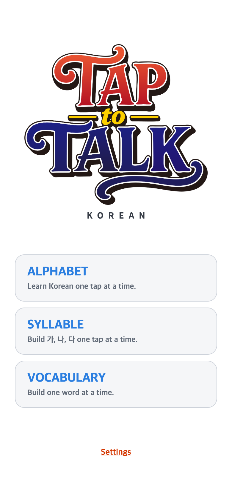
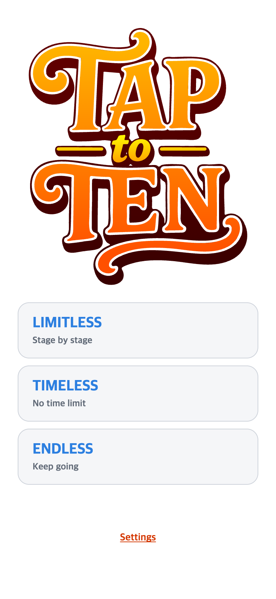
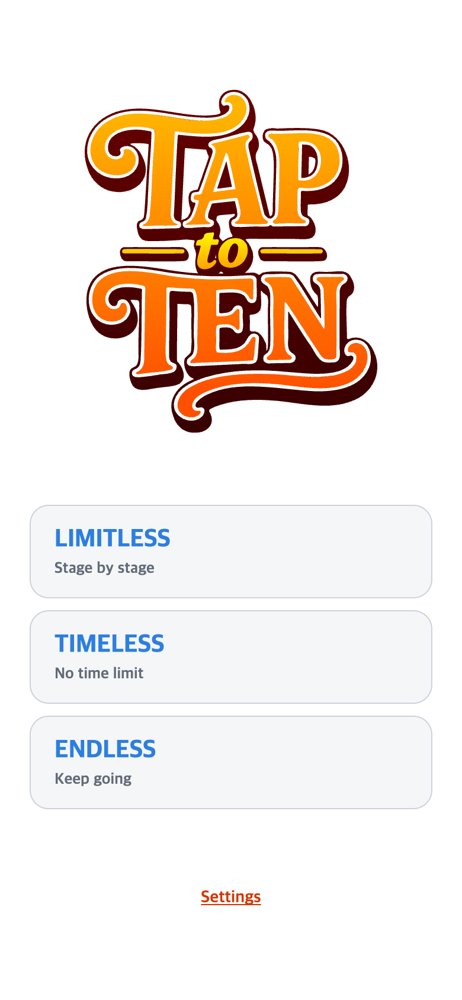
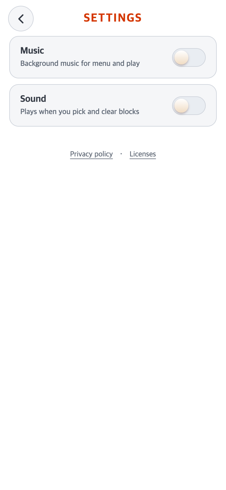
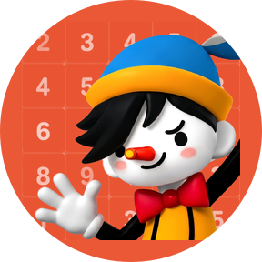
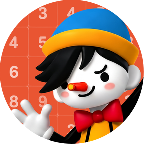
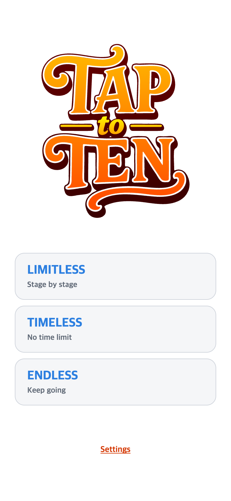

로고 중심과 버튼 위치는 그대로 두고 폭/높이를 직전의80%로 줄였습니다. 남는 공간은 여백이며 첫 스튜디오·커버·아이콘은 유지합니다. Settings에는 Music/Sound만 남깁니다.



최신 검증: 8개 화면에서 폭/높이×80%·중심/다른 UI 동일. 기존 진동 저장값true도 진동 호출0. 실제 기기 미검증. 후속 검사 결과
원래 작았던 메인 로고를 키웠습니다. 원본 비율·로고 중심·메뉴와 Settings 위치는 유지하고, 짧은 화면에서는 잘림·겹침을 피하도록 로고만 제한합니다. TALK은 읽기 참고만 했습니다.
2026-10-02 실제 재현 촬영 ·390×844 CSS px/DPR2 · 원본780×1688 PNG · Android 프레임을 적용한 macOS Chrome 모의검사입니다. 실제 휴대폰 설치 화면이 아닙니다.


실제 launcher 캡처가 아닙니다. 휴대폰에 따라 원형/둥근 사각형 등의 모양은 달라집니다. 그림 전체를 작게 넣는 테두리는 없으며, mask 밖의 모서리는 잘립니다.


8개 화면 조건·동일 물리 화면5밀도·아이콘15개 검사 통과. 첫 스튜디오/커버·나머지 UI·게임/저장은 유지했습니다. AAB 생성·Git push는 하지 않았습니다.